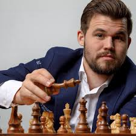
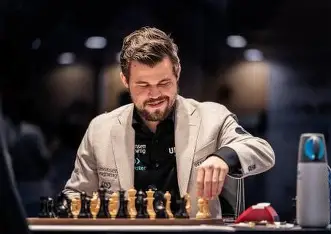
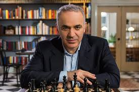
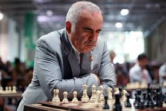

Les joueurs d'échecs
Magnus Carlsen
Sven Magnus Øen Carlsen (né le 30 novembre 1990 à Tønsberg, Norvège) est un grand maître d’échecs norvégien et l’un des joueurs les plus titrés de l’histoire. Cinq fois champion du monde d’échecs classiques (2013-2021) et détenteur des records mondiaux de classement Elo (2882) et d’invincibilité (125 parties), il a marqué son époque par une domination durable et un style universel.


Garry Kasparov
Garry Kasparov (né Garri Kimovitch Weinstein, 13 avril 1963, Bakou) est un grand maître d’échecs soviétique puis russe, champion du monde de 1985 à 2000. Reconnu pour son jeu créatif et son intense préparation, il est considéré comme l’un des plus grands joueurs de l’histoire des échecs et reste une figure marquante de l’activisme politique contemporain

